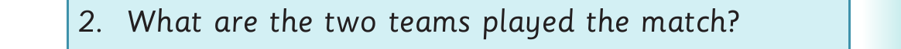

Baraka: Wow! That is wonderful. I am happy to hear
that stream A won.
Furaha: Why are you happy?
Baraka: Because that is my stream.
For Football questions and The magic tree, panel 1 of 5 presents the source activity with these printed labels and instructions: Questions 1. Who watched the football match?
Questions
1. Who watched the football match?

For Football questions and The magic tree, panel 2 of 5 presents the source activity with these printed labels and instructions: 2. What are the two teams played the match?
2. What are the two teams played the match?
For Football questions and The magic tree, panel 3 of 5 presents the source activity with these printed labels and instructions: 3. Which team won the match?
3. Which team won the match?
For Football questions and The magic tree, panel 4 of 5 presents the source activity with these printed labels and instructions: 4. Why was Baraka happy?
4. Why was Baraka happy?
Activity 4
1. Read the following passage:
For Football questions and The magic tree, panel 5 of 5 presents the source activity with these printed labels and instructions: The magic tree Once upon a time, there was a king. He lived in Mugamo village. There was a big tree near his house. The king liked to sit under that tree most of the time. He provided services to his people very slowly. He always pretended to be busy. But he spent most of his time eating and drinking. People who came to see him had to wait for many hours. In short, he was a lazy king. People complained a lot about this bad behaviour. They wondered why the king behaved that way. They even started wishing for.
The magic tree
Once upon a time, there was a king. He lived in Mugamo
village. There was a big tree near his house. The king
liked to sit under that tree most of the time. He provided
services to his people very slowly. He always pretended
to be busy. But he spent most of his time eating and
drinking. People who came to see him had to wait for
many hours. In short, he was a lazy king.
People complained a lot about this bad behaviour. They
wondered why the king behaved that way. They even
started wishing for something bad to happen to him.
One day, the king was sitting under the tree. Suddenly,
![For Football questions and The magic tree, panel 5 of 5 presents the source activity with these printed labels and instructions: The magic tree Once upon a time, there was a king. He lived in Mugamo village. There was a big tree near his house. The king liked to sit under that tree most of the time. He provided services to his people very slowly. He always pretended to be busy. But he spent most of his time eating and drinking. People who came to see him had to wait for many hours. In short, he was a lazy king. People complained a lot about this bad behaviour. They wondered why the king behaved that way. They even started wishing for.](images/pg093_sec001_panel05.png)